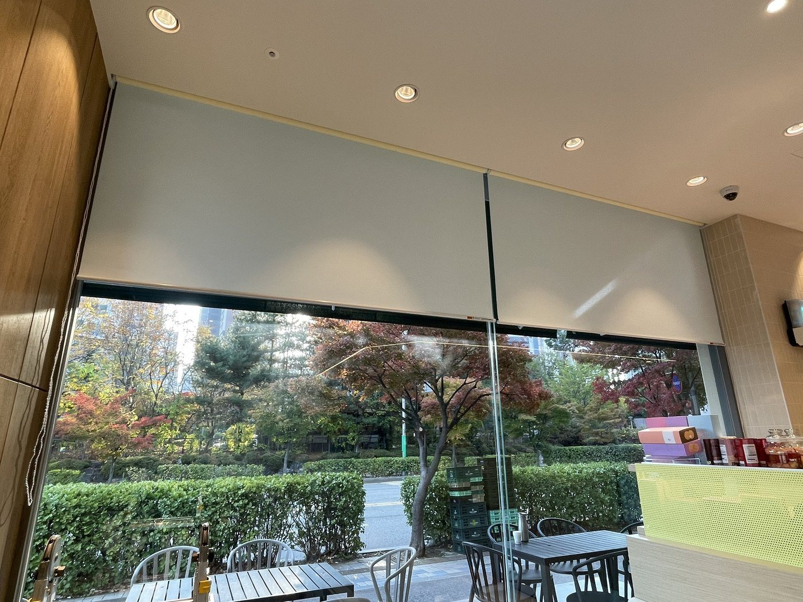
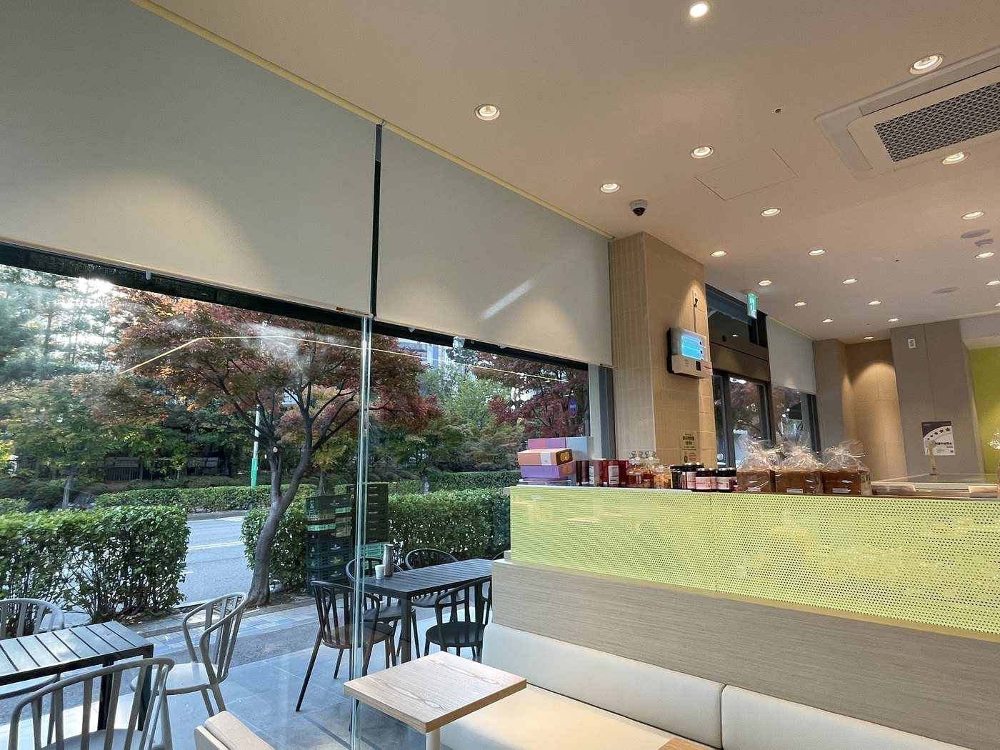
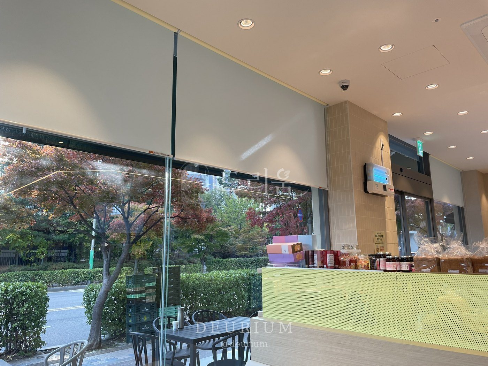
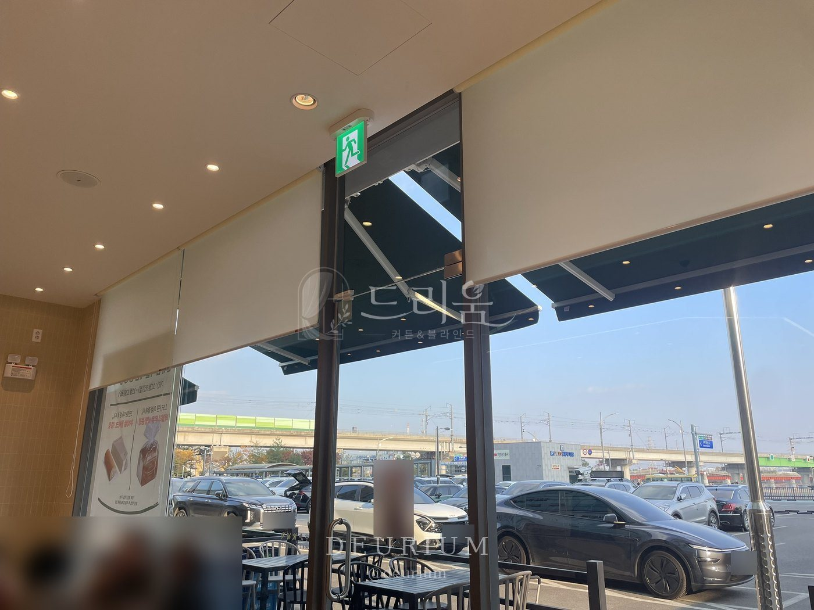

안녕하세요, 수도권 커튼·블라인드 전문 드리움 커튼&블라인드입니다. 이번 현장은 인천 소래포구 인근 베이커리 카페입니다. 가로·세로가 모두 큰 통유리 창이라 점보봉을 써서 롤스크린을 안전하게 시공했어요.
이번 시공 요약
- 위치 · 인천 남동구 소래포구 인근
- 공간 · 베이커리 카페 매장
- 제품 · 롤스크린 (대형 사이즈)
- 포인트 · 점보봉으로 처짐 없이 안전하게
통유리 창 롤스크린


창이 넓으면 롤스크린 한 장도 크고 무거워져요. 오후 햇살이 강할 땐 내려서 눈부심과 열기를 줄이고, 평소엔 끝까지 올려 통유리 풍경을 그대로 살렸습니다.
큰 창은 점보봉으로

일반 봉은 폭이 넓으면 가운데가 처질 수 있어서 굵고 튼튼한 점보봉을 썼어요. 큰 원단도 반듯하게 감기고 매일 올리고 내려도 안전합니다.
출입구 쪽까지

출입구 쪽 창까지 같은 롤스크린으로 맞춰 매장 전체가 깔끔하게 이어지도록 마무리했어요.
드리움은 광명 본사에서 직접 실측하고 시공하며, 서울·경기·인천 전 지역 방문 견적을 무료로 진행합니다. 원단 샘플을 들고 찾아가 창에 직접 대 보며 상담해 드려요.